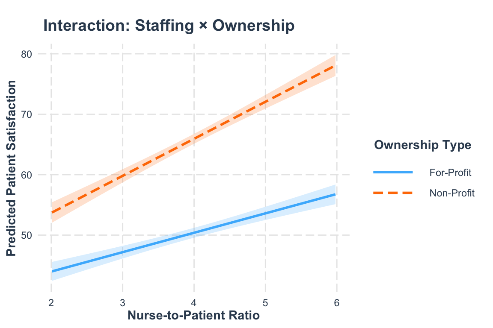
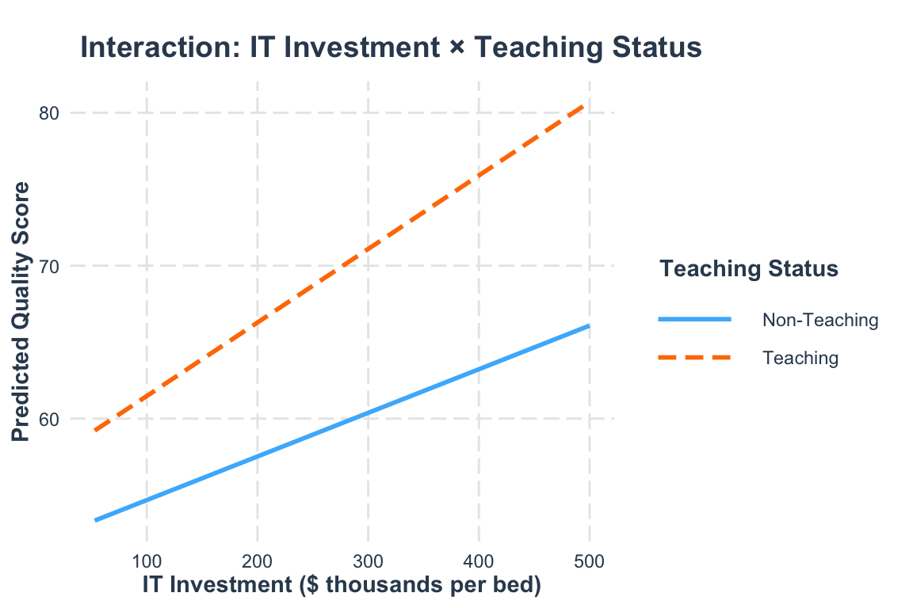

# These are equivalent:
lm(y ~ x1 * x2, data = mydata) # Shorthand
lm(y ~ x1 + x2 + x1:x2, data = mydata) # ExplicitLinear Regression: Dummy Variables and Interactions (Practice Activities)
Business Analytics in Healthcare Management
1 Overview
In this practice session, you will apply the regression techniques learned in the lecture for handling categorical predictors and interaction effects. This is a learning activity designed to help you gain hands-on experience with dummy variables and interactions.
What you’ll practice:
- Creating and interpreting dummy variables for categorical predictors
- Fitting regression models with binary and multi-level categorical variables
- Testing interaction effects (continuous × categorical, categorical × categorical, continuous × continuous)
- Interpreting interaction coefficients and marginal effects
- Using
emmeans()for pairwise comparisons - Centering variables for better interpretation
Format:
- Part 1: Fill-in-the-blank code sections (marked with
___) for core concepts - Part 2: Advanced exercises requiring independent analysis
Instructions:
- Complete the code by replacing
___with appropriate values - Run each chunk to verify your results
- Answer the interpretation questions
- Work through the advanced exercises at the end
- Compare your work with solutions (provided at the bottom)
Note: This practice is completion-based. The goal is to learn and build confidence—mistakes are part of the learning process!
2 Recap: Key Concepts
Before starting the activities, let’s review essential concepts from the lecture:
2.1 Dummy Variables
What they are: Binary (0/1) variables that represent categorical group membership
How many to create: For k categories, create k-1 dummy variables - One category serves as the reference group (omitted from model output) - Each dummy coefficient shows the difference from the reference group
Example: For hospital type (Teaching, Community, Critical Access): - Create 2 dummies if Community is reference: - hospital_typeTeaching: 1 if Teaching, 0 otherwise - hospital_typeCritical Access: 1 if Critical Access, 0 otherwise - Community hospitals coded as 0 on both dummies
2.2 Interaction Effects
What they are: Occur when the effect of one variable depends on another variable
Model syntax in R:
Types of interactions: - Continuous × Categorical: Does the effect of a continuous predictor vary across categories? - Categorical × Categorical: Does the effect of one category depend on another category? - Continuous × Continuous: Does the effect of one continuous variable change with another continuous variable?
2.3 Interpreting Interaction Coefficients
Key principle: When interactions are present, main effects change meaning!
- Main effect: Effect when other variable = 0 (or reference category)
- Interaction term: How much the effect changes for other values/categories
- Total effect: Main effect + (Interaction × value of moderator)
3 Common Errors and How to Fix Them
You WILL encounter errors while practicing—that’s completely normal! Here are common errors specific to dummy variables and interactions:
3.1 Error 1: “contrasts can be applied only to factors”
Error in `contrasts<-`(`*tmp*`, value = contr.funs[1 + isOF[nn]]) :
contrasts can be applied only to factors with 2 or more levelsCause: You’re trying to use a character variable as a categorical predictor
Fix: Convert to factor first:
mydata <- mydata %>%
mutate(category_var = factor(category_var))3.2 Error 2: Reference category confusion
Issue: “The coefficient doesn’t match what I expected for this category”
Cause: R chooses the reference category alphabetically by default
Fix: Explicitly set the reference category:
mydata <- mydata %>%
mutate(category_var = factor(category_var, levels = c("Reference", "Group1", "Group2")))
# The first level becomes the reference3.3 Error 3: Interaction interpretation mistakes
Issue: “I thought the interaction term was the effect for the second group”
Clarification: - Interaction term = additional effect beyond the main effect - Total effect for non-reference group = main effect + interaction - Always add them together!
3.4 Error 4: “object not found” when using emmeans
Error: object 'model_name' not foundCause: The model object doesn’t exist (typo or didn’t run the model)
Fix: 1. Check spelling of model name 2. Make sure you ran the lm() code chunk first 3. If using emmeans(), ensure the model was successfully created
3.5 Still Stuck?
If you’re still getting errors:
- Check that categorical variables are factors: Use
str(mydata)to check - Run all setup chunks: Models require data and packages to be loaded
- Read error messages carefully: They often tell you exactly what’s wrong
- Compare with lecture examples: Look at similar code in the lecture file
TipPro Tip: Testing Interactions
Before fitting interaction models: 1. Visualize first: Create plots with different colors/facets by group 2. Look for different slopes: If lines are parallel, no interaction 3. Then test formally: Fit the model and check p-value of interaction term
4 Part 1: Guided Practice Tasks
4.1 Task 1.1: Binary Dummy Variables - Fitting the Model
We’ll use the Enhanced Recovery After Surgery (ERAS) example from the lecture. First, let’s create the dataset:
# Generate surgical patient data
n <- 200
surgical_data <- tibble(
patient_id = 1:n,
protocol = sample(c("Standard", "ERAS"), n, replace = TRUE),
age = round(rnorm(n, 62, 12)),
bmi = round(rnorm(n, 28, 5), 1),
surgery_complexity = sample(1:3, n, replace = TRUE)
) %>%
mutate(
age = pmax(30, pmin(age, 85)),
bmi = pmax(18, pmin(bmi, 45)),
length_of_stay = round(
3 + 0.03 * age + 0.05 * bmi + 1.5 * surgery_complexity +
-1.8 * (protocol == "ERAS") + rnorm(n, 0, 1), 1
),
length_of_stay = pmax(1, length_of_stay),
protocol = factor(protocol, levels = c("Standard", "ERAS"))
)Your task: Fit a regression model predicting length_of_stay from protocol, age, bmi, and surgery_complexity.
Hint: Use the lm() function. R will automatically create dummy variables when you include a factor variable.
# Fit the model
model_protocol <- lm(___ ~ ___ + ___ + ___ + ___,
data = ___)
# View the results
summary(___)Question: What is the coefficient for protocolERAS? What does it mean?
Your answer:
4.2 Task 1.2: Interpreting Binary Dummy Variables
Using your model from Task 1.1, calculate the predicted length of stay for two patients:
- Patient A: Standard protocol, age 65, BMI 30, complexity = 2
- Patient B: ERAS protocol, age 65, BMI 30, complexity = 2
Hint: Use the predict() function with a new data frame, or calculate manually using coefficients.
# Create data for two patients
new_patients <- tibble(
protocol = factor(c("___", "___"), levels = c("Standard", "ERAS")),
age = c(___, ___),
bmi = c(___, ___),
surgery_complexity = c(___, ___)
)
# Get predictions
predict(___, newdata = ___)Question: What is the difference in predicted LOS between these two patients? Does it match the dummy variable coefficient?
Your answer:
4.3 Task 1.3: Multi-Level Categorical Variables
Now let’s work with hospital types (Teaching, Community, Critical Access). Create the dataset:
n_hospitals <- 250
hospital_type_data <- tibble(
hospital_id = 1:n_hospitals,
hospital_type = sample(c("Teaching", "Community", "Critical Access"),
n_hospitals, replace = TRUE,
prob = c(0.25, 0.50, 0.25)),
bed_count = case_when(
hospital_type == "Teaching" ~ round(rnorm(n_hospitals, 400, 100)),
hospital_type == "Community" ~ round(rnorm(n_hospitals, 200, 80)),
hospital_type == "Critical Access" ~ round(rnorm(n_hospitals, 40, 15))
),
avg_patient_severity = round(runif(n_hospitals, 1, 3), 2),
nurse_per_patient = round(runif(n_hospitals, 2, 5), 2)
) %>%
mutate(
bed_count = pmax(10, bed_count),
readmission_rate = round(
15 + 2.5 * avg_patient_severity + -0.8 * nurse_per_patient +
case_when(
hospital_type == "Teaching" ~ -2.5,
hospital_type == "Community" ~ 0,
hospital_type == "Critical Access" ~ 3.0
) + rnorm(n_hospitals, 0, 2), 1
),
readmission_rate = pmax(5, pmin(readmission_rate, 30)),
hospital_type = factor(hospital_type, levels = c("Community", "Teaching", "Critical Access"))
)Your task: Fit a model predicting readmission_rate from hospital_type, avg_patient_severity, and nurse_per_patient.
# Fit model with multi-level categorical variable
model_hospital <- lm(___ ~ ___ + ___ + ___,
data = ___)
# View results
summary(___)Question: How many dummy variables were created? Which category is the reference group?
Your answer:
4.4 Task 1.4: Pairwise Comparisons with emmeans
Using your model from Task 1.3, use emmeans() to compare all hospital types.
Hint: Use emmeans(model, "variable_name") to get estimated means, then pairs() for comparisons.
# Get estimated marginal means
emm <- emmeans(___, "___")
# Show the means
print(___)
# Pairwise comparisons
pairs(___)Question: Is the difference between Teaching and Critical Access hospitals statistically significant? What is the estimated difference?
Your answer:
4.5 Task 1.5: Continuous × Categorical Interaction
Let’s test whether nurse staffing effects vary by hospital ownership. Create the data:
n <- 300
satisfaction_data <- tibble(
hospital_id = 1:n,
ownership = sample(c("For-Profit", "Non-Profit"), n, replace = TRUE),
nurse_ratio = round(runif(n, 2, 6), 2),
patient_volume = round(rnorm(n, 500, 150)),
avg_acuity = round(runif(n, 1, 3), 2)
) %>%
mutate(
patient_volume = pmax(100, patient_volume),
patient_satisfaction = round(
50 + 3 * nurse_ratio + 5 * (ownership == "Non-Profit") +
2.5 * nurse_ratio * (ownership == "Non-Profit") +
-0.01 * patient_volume + -3 * avg_acuity + rnorm(n, 0, 5), 1
),
patient_satisfaction = pmax(0, pmin(patient_satisfaction, 100)),
ownership = factor(ownership, levels = c("For-Profit", "Non-Profit"))
)Your task: Fit a model with an interaction between nurse_ratio and ownership.
Hint: Use * between variables to include main effects and interaction, or use + for main effects and : for interaction.
# Fit model WITH interaction
model_interact <- lm(patient_satisfaction ~ ___ * ___,
data = ___)
# View results
summary(___)Question: Is the interaction term statistically significant? What does this tell us?
Your answer:
4.6 Task 1.6: Computing Marginal Effects from Interactions
Using your model from Task 1.5, calculate the effect of nurse staffing for each ownership type.
Hint: - For reference group (For-Profit): Effect = coefficient of nurse_ratio - For Non-Profit: Effect = coefficient of nurse_ratio + interaction coefficient
# Extract coefficients
coefs <- coef(model_interact)
# Effect for For-Profit hospitals (reference group)
effect_forprofit <- coefs["___"]
cat("For-Profit effect:", round(effect_forprofit, 2), "\n")
# Effect for Non-Profit hospitals (reference + interaction)
effect_nonprofit <- coefs["___"] + coefs["___"]
cat("Non-Profit effect:", round(effect_nonprofit, 2), "\n")
# Difference (should equal interaction coefficient)
cat("Difference:", round(effect_nonprofit - effect_forprofit, 2))Question: How much more effective is nurse staffing in Non-Profit vs. For-Profit hospitals?
Your answer:
4.7 Task 1.7: Visualizing Interactions
Using the probe_interaction() function from the interactions package, visualize the interaction from Task 1.5.
# Visualize the interaction
probe_interaction(___,
pred = ___, # Continuous predictor
modx = ___, # Categorical moderator
interval = TRUE,
x.label = "Nurse-to-Patient Ratio",
y.label = "Predicted Patient Satisfaction",
main.title = "Interaction: Staffing × Ownership",
legend.main = "Ownership Type")Question: Looking at the plot, describe how the slopes differ between the two ownership types.
Your answer:
4.8 Task 1.8: Centering for Continuous × Continuous Interactions
Let’s work with the physical therapy example. Create the data:
n <- 250
pt_data <- tibble(
patient_id = 1:n,
pt_sessions = round(runif(n, 4, 24)),
age = round(runif(n, 25, 80)),
baseline_function = round(runif(n, 30, 70))
) %>%
mutate(
function_improvement = round(
5 + 1.2 * pt_sessions + -0.1 * age + -0.03 * pt_sessions * age +
0.3 * baseline_function + rnorm(n, 0, 5), 1
),
function_improvement = pmax(0, function_improvement)
)Your task: 1. Center the age and pt_sessions variables 2. Fit a model with the interaction using centered variables 3. Compare with an uncentered model
# Center the variables
pt_data <- pt_data %>%
mutate(
age_c = ___ - mean(___),
pt_sessions_c = ___ - mean(___)
)
# Verify centering worked (means should be ~0)
cat("Mean of age_c:", round(mean(pt_data$age_c), 3), "\n")
cat("Mean of pt_sessions_c:", round(mean(pt_data$pt_sessions_c), 3), "\n")
# Fit model with UNCENTERED variables
model_uncentered <- lm(function_improvement ~ pt_sessions * age,
data = pt_data)
# Fit model with CENTERED variables
model_centered <- lm(function_improvement ~ ___ * ___,
data = pt_data)
# Compare results
tidy(model_uncentered)
tidy(model_centered)Question: Does the interaction coefficient change when you center the variables? What about the main effects? Which model is easier to interpret?
Your answer:
5 Part 2: Advanced Exercises
These exercises require more independent analysis and critical thinking. Use the concepts you practiced above to complete them.
5.1 Exercise 1: Dummy Variables with Multiple Categories
5.1.1 Background and Context
The context: Healthcare quality scores (0-100 scale) measure hospitals on metrics like patient safety, outcomes, and patient experience. These scores are publicly reported and affect hospital reputation and reimbursement.
The question: Do quality scores vary by geographic region (Northeast, South, Midwest, West)?
Why it might vary:
- Different regulatory environments
- Varying patient populations
- Regional differences in healthcare infrastructure
- Economic and resource disparities
Using the quality_data dataset below, analyze how hospital region (region) affects quality scores (quality_score) while controlling for IT investment (it_investment) and average length of stay (avg_los).
Please create the dataset using the code below:
# Create practice dataset
set.seed(2026)
n <- 350
quality_data <- tibble(
hospital_id = 1:n,
region = sample(c("Northeast", "South", "Midwest", "West"), n, replace = TRUE,
prob = c(0.2, 0.3, 0.3, 0.2)),
teaching_status = sample(c("Teaching", "Non-Teaching"), n, replace = TRUE),
it_investment = round(runif(n, 50, 500), 0),
avg_los = round(rnorm(n, 4.5, 1), 1)
) %>%
mutate(
avg_los = pmax(2, avg_los),
quality_score = round(
60 + 0.03 * it_investment + 5 * (teaching_status == "Teaching") +
case_when(
region == "Northeast" ~ 3,
region == "West" ~ 2,
region == "Midwest" ~ 0,
region == "South" ~ -2
) +
0.02 * it_investment * (teaching_status == "Teaching") +
-2 * avg_los + rnorm(n, 0, 5), 1
),
quality_score = pmax(0, pmin(quality_score, 100)),
region = factor(region),
teaching_status = factor(teaching_status, levels = c("Non-Teaching", "Teaching"))
)5.1.2 Your Tasks
Fit a regression model with quality scores (
quality_score) as the outcome and region (region) as a predictor, controlling for IT investment (it_investment) and average LOS (avg_los)Interpret the dummy variable coefficients. Which region has the highest quality scores compared to the reference category?
Change the reference category to “South” using
relevel(). How do the coefficients change?
# Your code here:
# 1. Fit model with region
# 2. Use emmeans to compare all regions
# 3. Change reference category to South5.2 Exercise 2: Testing for Interactions
5.2.1 Background and Context
The hypothesis: IT investment (health information technology, electronic health records, data systems) might have different impacts on quality depending on hospital type.
Why the effect might differ:
- Teaching hospitals: Already have sophisticated IT infrastructure and trained staff, so additional investment builds on existing systems
- Non-teaching hospitals: May be starting from a lower baseline, facing steeper learning curves
The question: Does the effect of IT investment (it_investment) on quality scores (quality_score) depend on teaching status (teaching_status)?
Test for a continuous × categorical interaction using the same dataset.
5.2.2 Your Tasks
Fit a model WITH the interaction between IT investment (
it_investment) and teaching status (teaching_status), controlling for region (region) and average LOS (avg_los)Interpret the coefficients. Does the effect of IT investment differ significantly depending on teaching status? If so, how do they differ?
Create a visualization showing how the effect of IT investment differs by teaching status
# Your code here:
# 1. Model with interaction
# 2. Interpret coefficients - check interaction term significance
# 3. Visualization5.3 Exercise 3: Making Predictions
5.3.1 Background and Context
Now let’s use your interaction model from Exercise 2 to make predictions. Imagine you’re a healthcare consultant comparing two very different hospitals:
Hospital A: A small non-teaching hospital in the South
region= “South”teaching_status= “Non-Teaching”it_investment= $100K per bed (modest investment)avg_los= 4 days
Hospital B: A large teaching hospital in the Northeast
region= “Northeast”teaching_status= “Teaching”it_investment= $400K per bed (substantial investment)avg_los= 4 days
Predict quality scores for both hospitals and understand which factors contribute most to any differences.
5.3.2 Your Tasks
Use your interaction model (
model_interactfrom Exercise 2) to predictquality_scorefor both hospitalsCompare the predictions. Which hospital is expected to have higher quality scores?
# Your code here:
# Create data for the two hospitals
# Predict quality scores6 Summary and Reflection
6.1 Key Takeaways
After completing this practice activity, you should be able to:
- ✓ Create and interpret dummy variables for categorical predictors
- ✓ Fit regression models with binary and multi-level categorical variables
- ✓ Use
emmeans()to compare categories beyond the reference group - ✓ Test for interaction effects between different types of variables
- ✓ Interpret interaction coefficients correctly
- ✓ Calculate marginal effects at different levels of a moderator
- ✓ Center continuous variables to improve interpretability
- ✓ Visualize interactions using
probe_interaction()
6.2 Common Pitfalls to Avoid
| Mistake | Consequence | Solution |
|---|---|---|
| Forgetting to convert categorical variables to factors | R treats them as numeric, leading to wrong interpretations | Always use factor() for categorical variables |
| Not knowing which category is the reference | Misinterpreting coefficients | Check factor levels with levels(mydata$category) |
| Interpreting main effects without considering interactions | Missing the full story | When interactions are present, interpret them together |
| Not centering variables in continuous × continuous interactions | Main effects are meaningless (at zero) | Center by subtracting the mean |
| Adding interaction terms without checking | Overfitting or misleading results | Always visualize first, then test |
7 Activity Solutions
Solutions for these activities are available below. Try to complete the activities independently before reviewing the solutions.
7.1 Task 1.1 Solution
Code
# Fit the model
model_protocol <- lm(length_of_stay ~ protocol + age + bmi + surgery_complexity,
data = surgical_data)
# View the results
summary(model_protocol)
Call:
lm(formula = length_of_stay ~ protocol + age + bmi + surgery_complexity,
data = surgical_data)
Residuals:
Min 1Q Median 3Q Max
-2.5721 -0.7067 -0.0943 0.5793 3.4279
Coefficients:
Estimate Std. Error t value Pr(>|t|)
(Intercept) 3.218238 0.587057 5.482 1.29e-07 ***
protocolERAS -1.788155 0.143425 -12.468 < 2e-16 ***
age 0.027256 0.006647 4.100 6.05e-05 ***
bmi 0.047624 0.012879 3.698 0.000283 ***
surgery_complexity 1.496551 0.086916 17.218 < 2e-16 ***
---
Signif. codes: 0 '***' 0.001 '**' 0.01 '*' 0.05 '.' 0.1 ' ' 1
Residual standard error: 1.007 on 195 degrees of freedom
Multiple R-squared: 0.7347, Adjusted R-squared: 0.7292
F-statistic: 135 on 4 and 195 DF, p-value: < 2.2e-16The coefficient for protocolERAS shows the difference in length of stay between ERAS and Standard protocols, controlling for patient characteristics. A negative coefficient indicates that ERAS reduces length of stay.
7.2 Task 1.2 Solution
Code
# Create data for two patients
new_patients <- tibble(
protocol = factor(c("Standard", "ERAS"), levels = c("Standard", "ERAS")),
age = c(65, 65),
bmi = c(30, 30),
surgery_complexity = c(2, 2)
)
# Get predictions
predictions <- predict(model_protocol, newdata = new_patients)
print(predictions) 1 2
9.411693 7.623537 Code
# Difference
cat("Difference:", round(predictions[2] - predictions[1], 2), "days\n")Difference: -1.79 daysCode
cat("Protocol coefficient:", round(coef(model_protocol)["protocolERAS"], 2), "days")Protocol coefficient: -1.79 daysThe difference in predicted LOS exactly equals the dummy variable coefficient for ERAS, demonstrating that the coefficient represents the treatment effect.
7.3 Task 1.3 Solution
Code
# Fit model with multi-level categorical variable
model_hospital <- lm(readmission_rate ~ hospital_type + avg_patient_severity + nurse_per_patient,
data = hospital_type_data)
# View results
summary(model_hospital)
Call:
lm(formula = readmission_rate ~ hospital_type + avg_patient_severity +
nurse_per_patient, data = hospital_type_data)
Residuals:
Min 1Q Median 3Q Max
-5.3053 -1.2590 0.0879 1.3945 5.0647
Coefficients:
Estimate Std. Error t value Pr(>|t|)
(Intercept) 15.5766 0.6934 22.466 < 2e-16 ***
hospital_typeTeaching -2.3559 0.2942 -8.009 4.68e-14 ***
hospital_typeCritical Access 3.2578 0.2999 10.864 < 2e-16 ***
avg_patient_severity 2.2348 0.2180 10.251 < 2e-16 ***
nurse_per_patient -0.8597 0.1589 -5.411 1.49e-07 ***
---
Signif. codes: 0 '***' 0.001 '**' 0.01 '*' 0.05 '.' 0.1 ' ' 1
Residual standard error: 1.909 on 245 degrees of freedom
Multiple R-squared: 0.6199, Adjusted R-squared: 0.6137
F-statistic: 99.88 on 4 and 245 DF, p-value: < 2.2e-16Two dummy variables were created (hospital_typeTeaching and hospital_typeCritical Access) because we have 3 categories. Community is the reference group (first level in the factor).
7.4 Task 1.4 Solution
Code
# Get estimated marginal means
emm <- emmeans(model_hospital, "hospital_type")
# Show the means
print(emm) hospital_type emmean SE df lower.CL upper.CL
Community 17.0 0.170 245 16.7 17.3
Teaching 14.6 0.239 245 14.2 15.1
Critical Access 20.3 0.247 245 19.8 20.7
Confidence level used: 0.95 Code
# Pairwise comparisons
pairs(emm) contrast estimate SE df t.ratio p.value
Community - Teaching 2.36 0.294 245 8.009 <0.0001
Community - Critical Access -3.26 0.300 245 -10.864 <0.0001
Teaching - Critical Access -5.61 0.344 245 -16.324 <0.0001
P value adjustment: tukey method for comparing a family of 3 estimates The pairwise comparisons show all possible comparisons between hospital types, including Teaching vs. Critical Access, which wasn’t directly available in the regression output.
7.5 Task 1.5 Solution
Code
# Fit model WITH interaction
model_interact <- lm(patient_satisfaction ~ nurse_ratio * ownership,
data = satisfaction_data)
# View results
summary(model_interact)
Call:
lm(formula = patient_satisfaction ~ nurse_ratio * ownership,
data = satisfaction_data)
Residuals:
Min 1Q Median 3Q Max
-17.2744 -3.6986 -0.6034 3.6057 13.9141
Coefficients:
Estimate Std. Error t value Pr(>|t|)
(Intercept) 37.5427 1.4447 25.987 < 2e-16 ***
nurse_ratio 3.2110 0.3508 9.155 < 2e-16 ***
ownershipNon-Profit 3.8787 2.1405 1.812 0.071 .
nurse_ratio:ownershipNon-Profit 2.9174 0.5203 5.607 4.72e-08 ***
---
Signif. codes: 0 '***' 0.001 '**' 0.01 '*' 0.05 '.' 0.1 ' ' 1
Residual standard error: 5.11 on 296 degrees of freedom
Multiple R-squared: 0.7766, Adjusted R-squared: 0.7743
F-statistic: 343 on 3 and 296 DF, p-value: < 2.2e-16If the interaction term (nurse_ratio:ownershipNon-Profit) is statistically significant, it means the effect of nurse staffing differs between ownership types.
7.6 Task 1.6 Solution
Code
# Extract coefficients
coefs <- coef(model_interact)
# Effect for For-Profit hospitals (reference group)
effect_forprofit <- coefs["nurse_ratio"]
cat("For-Profit effect:", round(effect_forprofit, 2), "\n")For-Profit effect: 3.21 Code
# Effect for Non-Profit hospitals (reference + interaction)
effect_nonprofit <- coefs["nurse_ratio"] + coefs["nurse_ratio:ownershipNon-Profit"]
cat("Non-Profit effect:", round(effect_nonprofit, 2), "\n")Non-Profit effect: 6.13 Code
# Difference (should equal interaction coefficient)
cat("Difference:", round(effect_nonprofit - effect_forprofit, 2))Difference: 2.92The difference between effects equals the interaction coefficient, showing that nurse staffing is more effective in Non-Profit hospitals.
7.7 Task 1.7 Solution
Code
# Visualize the interaction
probe_interaction(model_interact,
pred = nurse_ratio,
modx = ownership,
interval = TRUE,
x.label = "Nurse-to-Patient Ratio",
y.label = "Predicted Patient Satisfaction",
main.title = "Interaction: Staffing × Ownership",
legend.main = "Ownership Type")SIMPLE SLOPES ANALYSIS
Slope of nurse_ratio when ownership = For-Profit:
Est. S.E. t val. p
------ ------ -------- ------
3.21 0.35 9.15 0.00
Slope of nurse_ratio when ownership = Non-Profit:
Est. S.E. t val. p
------ ------ -------- ------
6.13 0.38 15.95 0.00
The steeper slope for Non-Profit hospitals shows that they benefit more from additional nurse staffing compared to For-Profit hospitals.
7.8 Task 1.8 Solution
Code
# Center the variables
pt_data <- pt_data %>%
mutate(
age_c = age - mean(age),
pt_sessions_c = pt_sessions - mean(pt_sessions)
)
# Verify centering worked
cat("Mean of age_c:", round(mean(pt_data$age_c), 3), "\n")Mean of age_c: 0 Code
cat("Mean of pt_sessions_c:", round(mean(pt_data$pt_sessions_c), 3), "\n")Mean of pt_sessions_c: 0 Code
# Fit model with UNCENTERED variables
model_uncentered <- lm(function_improvement ~ pt_sessions * age,
data = pt_data)
# Fit model with CENTERED variables
model_centered <- lm(function_improvement ~ pt_sessions_c * age_c,
data = pt_data)
# Compare results
cat("\nUncentered model:\n")
Uncentered model:Code
tidy(model_uncentered) %>%
mutate(across(where(is.numeric), ~round(., 4))) %>%
kable() %>% kable_styling()| term | estimate | std.error | statistic | p.value |
|---|---|---|---|---|
| (Intercept) | 23.0644 | 3.2552 | 7.0854 | 0.0000 |
| pt_sessions | 0.7141 | 0.2097 | 3.4050 | 0.0008 |
| age | -0.1707 | 0.0555 | -3.0771 | 0.0023 |
| pt_sessions:age | -0.0174 | 0.0036 | -4.7748 | 0.0000 |
Code
cat("\nCentered model:\n")
Centered model:Code
tidy(model_centered) %>%
mutate(across(where(is.numeric), ~round(., 4))) %>%
kable() %>% kable_styling()| term | estimate | std.error | statistic | p.value |
|---|---|---|---|---|
| (Intercept) | 10.7069 | 0.3510 | 30.5070 | 0e+00 |
| pt_sessions_c | -0.2259 | 0.0609 | -3.7063 | 3e-04 |
| age_c | -0.4108 | 0.0211 | -19.4533 | 0e+00 |
| pt_sessions_c:age_c | -0.0174 | 0.0036 | -4.7748 | 0e+00 |
The interaction coefficient stays the same, but the main effects are now interpretable (effect at mean values rather than at zero).
7.9 Exercise 1 Solution
Code
# 1. Fit model with region
model_region <- lm(quality_score ~ region + it_investment + avg_los,
data = quality_data)
summary(model_region)
Call:
lm(formula = quality_score ~ region + it_investment + avg_los,
data = quality_data)
Residuals:
Min 1Q Median 3Q Max
-17.2522 -5.1007 0.0107 5.4007 16.7618
Coefficients:
Estimate Std. Error t value Pr(>|t|)
(Intercept) 60.783087 2.057295 29.545 < 2e-16 ***
regionNortheast 1.591170 1.174984 1.354 0.176560
regionSouth -2.013732 0.998596 -2.017 0.044518 *
regionWest 1.667721 1.108565 1.504 0.133397
it_investment 0.039088 0.002905 13.456 < 2e-16 ***
avg_los -1.545425 0.410849 -3.762 0.000198 ***
---
Signif. codes: 0 '***' 0.001 '**' 0.01 '*' 0.05 '.' 0.1 ' ' 1
Residual standard error: 7.285 on 344 degrees of freedom
Multiple R-squared: 0.3731, Adjusted R-squared: 0.364
F-statistic: 40.95 on 5 and 344 DF, p-value: < 2.2e-16Code
# 2. Use emmeans to compare all regions
emm_region <- emmeans(model_region, "region")
print(emm_region) region emmean SE df lower.CL upper.CL
Midwest 64.6 0.715 344 63.2 66.0
Northeast 66.2 0.934 344 64.4 68.0
South 62.6 0.695 344 61.2 64.0
West 66.3 0.848 344 64.6 67.9
Confidence level used: 0.95 Code
pairs(emm_region) contrast estimate SE df t.ratio p.value
Midwest - Northeast -1.5912 1.170 344 -1.354 0.5291
Midwest - South 2.0137 0.999 344 2.017 0.1838
Midwest - West -1.6677 1.110 344 -1.504 0.4359
Northeast - South 3.6049 1.170 344 3.092 0.0115
Northeast - West -0.0766 1.260 344 -0.061 0.9999
South - West -3.6815 1.100 344 -3.347 0.0050
P value adjustment: tukey method for comparing a family of 4 estimates Code
# 3. Change reference category to South
quality_data_reref <- quality_data %>%
mutate(region = relevel(region, ref = "South"))
model_region_south <- lm(quality_score ~ region + it_investment + avg_los,
data = quality_data_reref)
summary(model_region_south)
Call:
lm(formula = quality_score ~ region + it_investment + avg_los,
data = quality_data_reref)
Residuals:
Min 1Q Median 3Q Max
-17.2522 -5.1007 0.0107 5.4007 16.7618
Coefficients:
Estimate Std. Error t value Pr(>|t|)
(Intercept) 58.769355 2.137476 27.495 < 2e-16 ***
regionMidwest 2.013732 0.998596 2.017 0.044518 *
regionNortheast 3.604902 1.165948 3.092 0.002152 **
regionWest 3.681452 1.099823 3.347 0.000906 ***
it_investment 0.039088 0.002905 13.456 < 2e-16 ***
avg_los -1.545425 0.410849 -3.762 0.000198 ***
---
Signif. codes: 0 '***' 0.001 '**' 0.01 '*' 0.05 '.' 0.1 ' ' 1
Residual standard error: 7.285 on 344 degrees of freedom
Multiple R-squared: 0.3731, Adjusted R-squared: 0.364
F-statistic: 40.95 on 5 and 344 DF, p-value: < 2.2e-16When you change the reference category, the coefficients change to reflect comparisons against the new reference, but the underlying relationships remain the same.
7.10 Exercise 2 Solution
Code
# 1. Model with interaction
model_interact_ex2 <- lm(quality_score ~ it_investment * teaching_status + region + avg_los,
data = quality_data)
summary(model_interact_ex2)
Call:
lm(formula = quality_score ~ it_investment * teaching_status +
region + avg_los, data = quality_data)
Residuals:
Min 1Q Median 3Q Max
-14.7047 -2.9453 -0.0448 3.3046 12.9064
Coefficients:
Estimate Std. Error t value Pr(>|t|)
(Intercept) 59.101713 1.517454 38.948 < 2e-16 ***
it_investment 0.028521 0.002815 10.132 < 2e-16 ***
teaching_statusTeaching 4.850030 1.228863 3.947 9.62e-05 ***
regionNortheast 2.312480 0.808943 2.859 0.00452 **
regionSouth -2.274671 0.686562 -3.313 0.00102 **
regionWest 2.127456 0.767029 2.774 0.00585 **
avg_los -1.616458 0.282364 -5.725 2.27e-08 ***
it_investment:teaching_statusTeaching 0.019548 0.004007 4.879 1.64e-06 ***
---
Signif. codes: 0 '***' 0.001 '**' 0.01 '*' 0.05 '.' 0.1 ' ' 1
Residual standard error: 5.006 on 342 degrees of freedom
Multiple R-squared: 0.7057, Adjusted R-squared: 0.6996
F-statistic: 117.1 on 7 and 342 DF, p-value: < 2.2e-16Code
# 2. Interpret coefficients
tidy(model_interact_ex2, conf.int = TRUE) %>%
mutate(across(where(is.numeric), ~round(., 3))) %>%
kable(caption = "Interaction Model Results") %>%
kable_styling()| term | estimate | std.error | statistic | p.value | conf.low | conf.high |
|---|---|---|---|---|---|---|
| (Intercept) | 59.102 | 1.517 | 38.948 | 0.000 | 56.117 | 62.086 |
| it_investment | 0.029 | 0.003 | 10.132 | 0.000 | 0.023 | 0.034 |
| teaching_statusTeaching | 4.850 | 1.229 | 3.947 | 0.000 | 2.433 | 7.267 |
| regionNortheast | 2.312 | 0.809 | 2.859 | 0.005 | 0.721 | 3.904 |
| regionSouth | -2.275 | 0.687 | -3.313 | 0.001 | -3.625 | -0.924 |
| regionWest | 2.127 | 0.767 | 2.774 | 0.006 | 0.619 | 3.636 |
| avg_los | -1.616 | 0.282 | -5.725 | 0.000 | -2.172 | -1.061 |
| it_investment:teaching_statusTeaching | 0.020 | 0.004 | 4.879 | 0.000 | 0.012 | 0.027 |
Code
# 3. Visualization
probe_interaction(model_interact_ex2,
pred = it_investment,
modx = teaching_status,
x.label = "IT Investment ($ thousands per bed)",
y.label = "Predicted Quality Score",
main.title = "Interaction: IT Investment × Teaching Status",
legend.main = "Teaching Status")SIMPLE SLOPES ANALYSIS
Slope of it_investment when teaching_status = Non-Teaching:
Est. S.E. t val. p
------ ------ -------- ------
0.03 0.00 10.13 0.00
Slope of it_investment when teaching_status = Teaching:
Est. S.E. t val. p
------ ------ -------- ------
0.05 0.00 16.91 0.00
If the interaction is significant, IT investment has different effects depending on whether the hospital is a teaching hospital or not.
7.11 Exercise 3 Solution
Code
# Create data for the two hospitals
new_hospitals <- tibble(
it_investment = c(100, 400),
teaching_status = factor(c("Non-Teaching", "Teaching"),
levels = c("Non-Teaching", "Teaching")),
region = factor(c("South", "Northeast"),
levels = levels(quality_data$region)),
avg_los = c(4, 4)
)
# Predict quality scores
predictions <- predict(model_interact_ex2, newdata = new_hospitals, interval = "confidence")
results <- bind_cols(new_hospitals, as.data.frame(predictions))
results %>%
kable(caption = "Predicted Quality Scores with 95% Confidence Intervals") %>%
kable_styling()| it_investment | teaching_status | region | avg_los | fit | lwr | upr |
|---|---|---|---|---|---|---|
| 100 | Non-Teaching | South | 4 | 53.21334 | 51.75266 | 54.67403 |
| 400 | Teaching | Northeast | 4 | 79.02626 | 77.42205 | 80.63047 |
Code
cat("\nDifference in predicted quality scores:")
Difference in predicted quality scores:Code
cat(round(predictions[2, "fit"] - predictions[1, "fit"], 2), "points")25.81 pointsHospital B (teaching hospital in Northeast with high IT investment) is predicted to have substantially higher quality scores due to the combination of favorable region, teaching status, high IT investment, and the positive interaction between IT investment and teaching status.